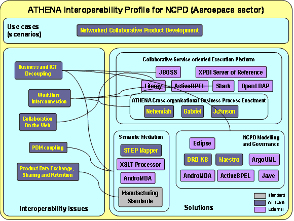

")

Networked collaborative product development (NCPD) profile
Networked collaborative product development (NCPD) pilot
In the first year only smaller test pilots for each result were built. In the second year a more integrative pilot focusing working methods for Engineering Change Management (ECM) in a new approach to product design (Networked Collaborative Product Development) was started, utilizing the AKM solution to model-designed and -configured collaboration spaces. In the third year the EADS internal platform using many ATHENA and PLM services are so far implemented. The platform will be further developed, see the http://nfig.hd.free.fr/ATHENA Website. These piloted services demonstrate interoperability on most layers of architecture, from the user workplace to data sharing, but is not yet applying AKM beyond setting up the ECM collaboration space. It is due to a choice to start from robust software components based on standards for the execution platform (that is the foundation of any pilot). Several alternative concrete solutions were identified and benchmarked, in order to finally obtain a workable pilot, and in order to be able to illustrate added value of the solutions provided by ATHENA, in particular in term of innovation.
One of the alternative solutions for Collaborative Networked Collaborative Development platform is described in Figure 70 as an interoperability profile. It was designed in order to solve different important interoperability issues as Business/ICT decoupling, workflow interconnection, B2B collaboration on the Web, PDM coupling and finally product data exchange, sharing and long-term retention for all the enterprises belonging to a network. It is the reason why manufacturing standard (ISO STEP, PLM services and CM II) were selected as key components of the solution. In addition, the service-oriented execution platform is built on an application server based on EJB/CCM standard (JBoss), a portal based on JSR168/WSRP, BPEL (ActiveBPEL) and workflow engine compliant with WfMC specification (Shark), a directory for enterprise (OpenLDAP) and finally a cross organisation business process execution engine (Nehemiah + Gabriel + Johnson). A modelling and governance platform was also added in order to be able to model and develop complementary solution components for collaboration or functional extension. This platform was designed in a similar way as the execution platform, i.e. on the basis of free commodities based on ICT and modelling standards. Finally semantic mediation, horizontally or vertically, is ensured by AndroMDA, STEP Mapper and XSLT processor for this particular concrete platform. Some alternative solutions were also studied as the ATHENA Semantic Mediation suite and usage of Metis for active knowledge models for model-generated workplaces. It allowed through the piloting activities to identify added value of the solutions proposed by ATHENA but also to identify remaining gaps or gaps related to proposed solutions (e.g. simultaneous usage of syntactic and semantic Web solutions). From the proposed profile, any organisation willing to set up similar platform is able to take advantage of the profile in order to gain time for elaboration of interoperability issues to address and candidate solutions that are applicable.
The different combination with alternative solution components can’t be reflected with the profile template used here, but are available within the ATHENA Knowledge Base created with Protégé (DRD KB) containing requirements, interoperability issues and solutions with their relationships (DRD KB).
